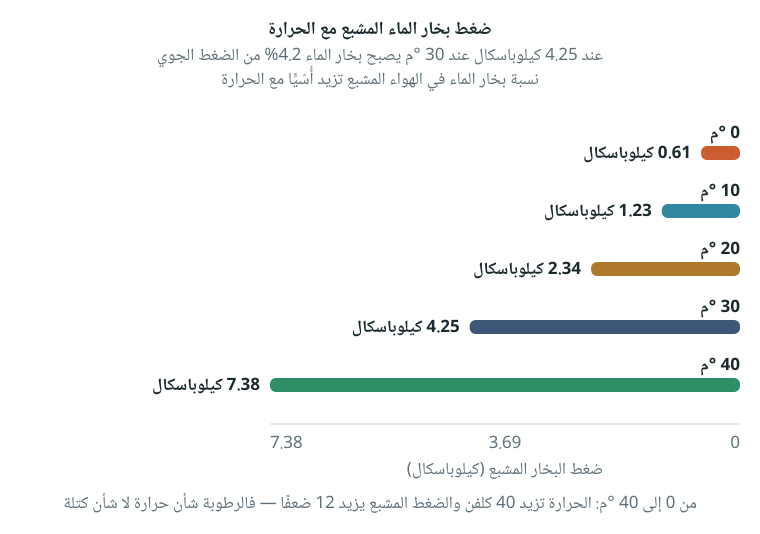

الضغط الجزئي (دالتون)
الضغط الجزئي هو نصيب كل غاز من ضغط الخليط: pᵢ = yᵢ·P. مجموع الضغوط الجزئية يساوي الضغط الكلي (قانون دالتون)، وضغط بخار الماء المشبع يحدد أعلى نسبة بخار يستوعبها الهواء عند حرارة معينة.
في الهواء الجوي يسهم النيتروجين بنحو 79.1 كيلوباسكال والأكسجين بـ21.23 كيلوباسكال من أصل 101.325 كيلوباسكال. والضغط الجزئي لا يعتمد على وجود الغازات الأخرى بل على جزءها المولي، لكن سلوك كل غاز في الانتقال والذوبان يتبع ضغطه الجزئي لا الضغط الكلي — وهو أساس قانون هنري للذوبان وقانون دايتون للانتشار. وفي الهواء الرطب: الحد الأقصى لضغط بخار الماء هو الضغط المشبع عند الحرارة، وعند 30 °م يساوي 4.246 كيلوباسكال أي نحو 4.2% من الضغط الجوي، ولهذا لا تستطيع كتلة هواء دافئة أن تحمل كميات بخار كبيرة إلا إذا ارتفعت حرارتها.
كيف تعمل الظاهرة؟
الضغط الكلي في خليط غازات مثالية مجموع ما تُحدثه الجزيئات من تصادمات مع الجدار، وكل نوع يُسهم بعدد جزيئاته لا بكتلته. ونصيب الغاز المولي يساوي نسبة جزيئاته إلى المجموع، فالجزء المولي yᵢ = pᵢ/P. وتشغل جزيئات الماء حالة خاصة لأنها تتكاثف: عند بلوغ ضغطها الجزئي الضغط المشبع يصبح البخار مشبعًا، وأي تبريد إضافي يخرج ماءً سائلًا. وهذا ما يجعل الرطوبة تُقاس بالضغط لا بالكتلة: الضغط المشبع يعتمد على الحرارة وحدها تقريبًا.
العلاقة بالأرقام
pᵢ = yᵢ·P: الأكسجين 0.2095×101.325 = 21.23 كيلوباسكال، والنيتروجين 79.11 كيلوباسكال. وفي مثال هواء جاف 35 °م ونقطة نده 22 °م: الضغط الجزئي للبخار = 2.645 كيلوباسكال (المشبع عند 22 °م)، والرطوبة النسبية = 2.645/5.623 = 47%. وبنسبة الخلط m_v/m_a = 0.622·p_v/(P − p_v) ≈ 0.017 كغ بخار لكل كغ هواء جاف. وهذه الأرقام هي ما يحكم حرارة نقطة التكاثف على سطح بارد: متى هبطت حرارة السطح إلى 22 °م بدأ التبخّر السطحي بالتكاثف.
مفاهيم متقاربة
الضغط الجزئي ليس الجزء الحجمي إن اختلف السلوك عن الغاز المثالي، فالجزء المولي يُستعمل وليس الحجم عند الضغوط العالية. وليس الضغط البخاري هو الرطوبة النسبية: الثاني نسبة إلى ضغط مشبع يعتمد على الحرارة. والقانون لا يعني أن الغازات لا تتفاعل: عند التفاعل الكيميائي يتغيّر الجزء المولي ويحتاج الحل إلى توازن كمونات كيميائية. وفي الأغشية ينتقل البخار بدافع ضغطه الجزئي لا فرق الضغط الكلي، لذا могут تنتقل الرطوبة عبر غشاء ضدّ تدرج الضغط الكلي.
حدود التطبيق
قانون دالتون صالح للغازات المثالية غير المتفاعلة؛ عند الضغوط العالية تنحرف الخلائط بمقدار معاملات الفاعلية. وفي وجود رذاذ أو ضباب لا يكون بخار الماء مشبعًا بالضرورة في كل نقطة، وقد تُقاس رطوبة ظاهرية أعلى من التشبع بلا تكاثف في نقاط التكاثف. وعلى ارتفاعات كبيرة لا يبقى الضغط الجوي 101.325 كيلوباسكال، فكل الحسابات تُعاد بضغط المكان، وهو شرط لازم في المعايرة وفي حسابات الكثافة.

| الكمية | القيمة | المصدر |
|---|---|---|
| الضغط الجزئي للأكسجين في الهواء الجوي الجاف | 21.23 كيلوباسكال | [1] |
| الضغط الجزئي للنيتروجين في الهواء الجوي الجاف | 79.11 كيلوباسكال | [1] |
| ضغط بخار الماء المشبع عند 30 °م | 4.246 كيلوباسكال | [2] |
| الرطوبة النسبية لهواء جاف 35 °م ونقطة نده 22 °م | 47 بالمئة | [2] |
المصادر
- 1 Dalton's law — Wikipedia. en.wikipedia.org/wiki/Dalton%27s_law · اطُّلع عليه 2026-11-19
- 2 Water Vapor - Saturation Pressure — The Engineering ToolBox. www.engineeringtoolbox.com/water-vapor-saturation-pressure-d_599.html · اطُّلع عليه 2026-11-19
- 3 Partial pressure — Wikipedia. en.wikipedia.org/wiki/Partial_pressure · اطُّلع عليه 2026-11-19
استشهد بهذا المصطلح
الصيغتان مبنيتان من بيانات الصفحة نفسها: العنوان والتاريخ ورابط النسخة المنشورة.
الضغط الجزئي (دالتون). (2026). ديوان المعرفة — انفراد. https://infiradev.com/diwan/terms/partial-pressure.html
@misc{partial-pressure2026,
title = {الضغط الجزئي (دالتون)},
howpublished = {{ديوان المعرفة — انفراد} — مرجع علمي عربي},
year = {2026},
url = {https://infiradev.com/diwan/terms/partial-pressure.html},
urldate = {2026-11-19},
note = {مراجعة علمية: عبدالله الهويدي — مراجعة في تطبيق انفراد}
}
راجعه: عبدالله الهويدي — مراجعة في تطبيق انفراد · 2026-11-19 · آخر تحديث 2026-11-19